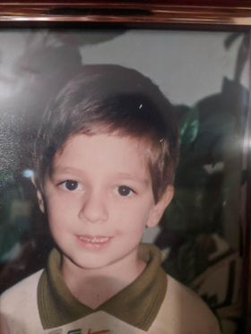

Peter Hristov's Personal Website
I'm a researcher in computational topology for scientific visualisation. I also run, juggle and enjoy hiking.
Education
PhD Candidate, University of Leeds, October 2017 - December 2021
MSc (Distinction), University of Leeds, October 2016 - September 2017
Bachelors (Distinction), Veliko Tarnovo University, Bulgaria, October 2011 - September 2015
Work Experience
Graduate Intern, Lawrence Berkeley National Laboratory, July 2019 - September 2019
Web Developer, Skypark Secure, January 2016 - August 2016
Web Developer & Co Founder, Phantomloops, April 2015 - December 2016
Web Developer, Auxionize, December 2013 - August 2014
C# Developer, Kukui, October 2013 - November 2014
Teaching Assistant
Computer Graphics, Level 3, 2017-2020
Bio-Inspired Computing, Masters, 2017-2018
Geometric Processing, Masters, 2019
Administration Experience
PGR Representitve at a faculty review for the Faculty of Medicine and Health at the University of Leeds.
PGR Representitve at administrative meetings at the school, faculty and university level on PGR research, teaching and wellbeing.
Organised social events for PGRs such as first year induction events, research symposiums and online working office alternatives.